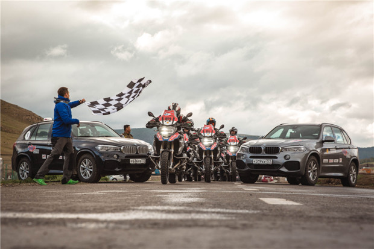

用冒险，消除陌生感
GS Trophy国际挑战营是胜利者的乐园，所有来到这里的骑手，都是打败了各自国家无数“佼佼者”，为自己在国际总决赛的三个参赛名额中赢得一席之地的勇士。试问，又有哪位冒险车手不愿意前往遥远的蒙古荒野，在一场争夺冠军的团队比赛中，挑战来自各个大洲的BMW摩托车GS车手呢?
Read More
When we talk about its related stories, its light is more dazzling.
未知的世界深邃神秘，诱使你不断探索前行。勇往直前，突破寻常。不如跨上 BMW F 850 GS Adventure，追随内心的指引，享受探险，披荆斩棘。BMW F 850 GS Adventure，专为无畏的探索者而生。仿佛一位可靠、稳健、强劲的伴侣，始终与志在千里的骑手同路，一起追寻世界的神奇 。
More Details
BMW R 1250 GS 性能强劲且高效。焕然一新的水平对置双缸发动机让骑行体验更加直接。容量增大，带来 100 kW、1254cc 的强劲动力。BMW ShiftCam 可变凸轮轴控制系统，可在更广的转速范围内提供出色的动力输出。无论是在城市道路、高速公路、还是越野路面，每前行一米，都会为您带来更多自由和骑行乐趣。全新的设计和颜色，众多技术细节和令人兴奋的个性化选配，让 BMW R 1250 GS 独树一帜。
More Details你热衷挑战，看到崎岖不平的道路总是跃跃欲试，而旅途总是险象丛生，但不管是砾石小路还是茫茫荒野，BMW R 1250 GS Adventure总能以出色耐力一路披荆斩棘，为你的旅途加冕。其搭载更高效的水平对置双缸发动机，可爆发出1254cc的排量和高达100kW (136 PS)的动力输出，轻松满足你对野外、荒漠与乡村公路上驰骋的野心，踏入下一个疆场。BMW ShiftCam可变凸轮轴作为一项全新的研发成果，赋予水平对置发动机前所未有的稳定性，确保任一转速范围都行动自如。BMW R 1250 GS Adventure凭借出色的性能优势坦然经受艰巨考验，让冒险充满乐趣与激情。
More Details当我们谈及它的相关故事时，它的光芒才愈加耀眼。
GS Trophy国际挑战营是胜利者的乐园，所有来到这里的骑手，都是打败了各自国家无数“佼佼者”，为自己在国际总决赛的三个参赛名额中赢得一席之地的勇士。试问，又有哪位冒险车手不愿意前往遥远的蒙古荒野，在一场争夺冠军的团队比赛中，挑战来自各个大洲的BMW摩托车GS车手呢?
Read MoreGS Trophy国际挑战营以“团结友好”的竞技精神，将爱好骑行的人们紧紧团结在一起，并提供机会，让人们与来自世界各地的其他骑手建立终生友谊，当然，你能够收获友谊的原因，绝不只是因为你的R 1200 GS Rallye。在GS Trophy国际挑战营的号召下，全球GS骑手团体日益壮大，技艺高超的勇士们在活动中不断挑战自我，在彼此竞技、切磋的过程中，逐渐消除距离感、消除界限、消除国界，最终成为一个整体。
Read MoreSed ut perspiciatis unde om nis natus error sit volup atem accusant dolorem que laudantium. Totam aperiam, eaque ipsa quae ai.
Sed ut perspiciatis unde om nis natus error sit volup atem accusant dolorem que laudantium. Totam aperiam, eaque ipsa quae ai.
Sed ut perspiciatis unde om nis natus error sit volup atem accusant dolorem que laudantium. Totam aperiam, eaque ipsa quae ai.
Sed ut perspiciatis unde om nis natus error sit volup atem accusant dolorem que laudantium. Totam aperiam, eaque ipsa quae ai.
1) 请使用17位VIN码进行查询，或者使用随车清单中的车辆型号进行查询；
2) 华晨宝马相关车型环保信息查询功能暂不提供，请持续关注。
More考验骑手骑行水平的“特殊赛程”，包含了各种高难度的技术考核
除此之外，还有另一种更容易得分的方法，那就是“摄影比赛”。
能否完成这些困难挑战?
GS Trophy 国际挑战营吸引人的地方在于，它传播了BMW 摩托车的理念，用一个词概括我的GS精神，那就是团结。